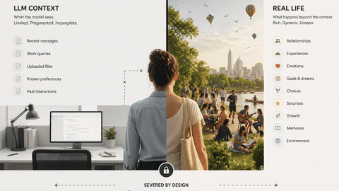
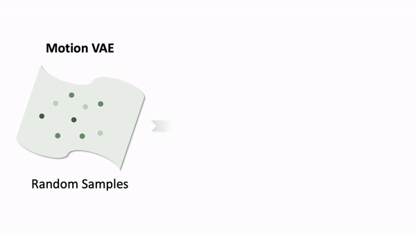
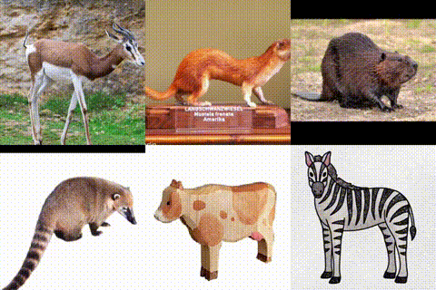
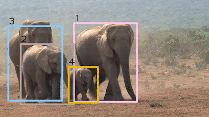
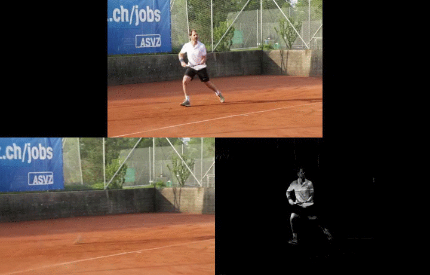

About
I'm a Computer Science PhD student at UT Austin, working at the HUMAIN Lab with Prof. Leqi Liu.
My research focuses on how can we build personal AI systems that truly understand us.
This question is far from trivial.
Specifically, I'm interested in building multimodal agentic systems that understand people over time, reason across modalities, and adapt to support human thinking.
My work draws inspiration from Theory of Mind, Cognitive Psychology, Computer Vision, Bayesian Nonparametric Models, Reinforcement Learning, and Dynamical Systems.
Before that, I was a visiting student at the Stanford Vision Lab supervised by Prof. Jiajun Wu. I obtained my master's degree from Ben-Gurion University of the Negev, working at the Vision, Inference, and Learning (VIL) Lab supervised by Prof. Oren Freifeld.
News
- Dec 1, 2026 Upcoming I will be moderating the AI Safety Careers Panel (BlueDot x Austin AI Alignment).
- Nov 2026 Upcoming I will be offering a new class, Intro to AI Safety, at UT Austin in Spring 2027.
- Aug 2026 Co-teaching CS 363M - Principles of Machine Learning with Juan Diego.
- Aug 2026 New post on LessWrong: The Age of Pluribus: One Consultant for Everyone (Frontpage!)
- Jul 2026 The Severance Problem was featured on Emergent Mind's YouTube channel.
Publications

🐎 Ponymation: Learning 3D Animal Motions from Unlabeled Online Videos.
Sun*, Litvak*, Zhang, Li, Wu†, Wu†, ECCV, 2025.
🐏🐕🐁🦌🐘🦒🦓🐆🦘🐄🐖🐈🐅🦝🐎🦬🦙 Learning the 3D Fauna of the Web.
Li*, Litvak*, Li, Zhang, Jakab, Rupprecht, Wu†, Vedaldi†, Wu†, CVPR, 2024.
🐘 Unsupervised Online Multiple Animal Tracking.
Litvak, Dinari, Freifeld, CV4Animals Workshop, CVPR 2022.
🎾 JA-POLS: a Moving-camera Background Model via Joint Alignment and Partially-overlapping Local Subspaces.
Chelly, Winter, Litvak, Rosen, Freifeld, CVPR 2020.
[Paper]
[Code]
Teaching
- Elements of Data Visualization - Spring 2026/Fall 2025
- Principles of Programming Languages (Head of TA) - Fall 2023
- Introduction to Numerical Analysis - Fall 2022
- Computer Vision: Models, Learning and Inference - Spring 2021
- Principles of Programming Languages - Spring 2020
Contact
Office: Gates Dell Complex, UT Austin, TXEmail: dorlit@utexas.edu